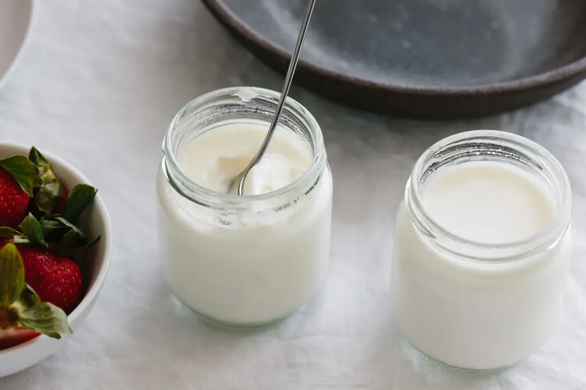

Home
Homemade Yogurt Recipe

A versatile recipe that can be flavored however you want.
Instead of buying from the supermarket you can make your own yougurt and easily adjust your prefered consistency and acidity. It's also a lot cheaper.
Originally at: Downshiftology
Ingredients
- 42 ounces organic milk, (whole, 2% or skim milk)
- 1 packet yogurt starter
Steps
- Heat the milk to 180 degrees fahrenheit. This kills whatever unsavory microbes may be lurking in your milk and ensures you've got no remnant bacteria, pathogens, mold, or spores. When you create an environment for bacteria to multiple, you only want the good bacteria (which you introduce to the milk) to multiply. Heating the milk also creates a thicker yogurt by changing the protein structure.
- Cool the milk to 112-115 degrees fahrenheit. After you've made the milk inhospitable for the bad stuff, you want to make it hospitable for the good bacteria - your starter mix. Use the same instant read thermometer you used when heating your milk, to know when it's cooled to 112-115 degrees.
- Add your yogurt starter - the good bacteria. Pour out one cup of warm milk and stir in either a yogurt starter (I use Yogourmet) or 3 tablespoons of pre-made yogurt. For a good starter, look for lactic acid forming bacteria. At a minimum you want Lactobacillus bulgaricus and Streptococcus thermophilus. Other good bacteria include Lactobacillus acidophilus and Bifidobacterium lactis.
- Stir the yogurt starter with the rest of the milk. This spreads the good bacteria throughout all the milk.
- Pour the milk into jars and incubate for 7-9 hours. A consistent, luke-warm temperature is paradise for all your good bacteria and promotes their growth. The longer you incubate your yogurt the thicker and tangier it'll be. And after about 8 hours, you'll have delicious, healthy, thick and creamy yogurt.
- Place the jars in the fridge to cool and set. Cool the yogurt in the refrigerator for a couple of hours. As the yogurt cools it will get even thicker!